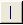
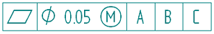

Define feature control frame content
You can add symbols that indicate geometric characteristics, material conditions, tolerance, and other information to feature control frames by clicking the symbol buttons on the General page of the Feature Control Frame dialog box.
-
On the General page, Feature Control Frame Properties dialog box, specify the content in the order that you want it to appear in the annotation using the following techniques:
-
To specify in which line of a multiline frame that you want to insert information, click in one of the four Content boxes. Blank Content boxes do not display in the annotation you place.
-
To add a geometric characteristic symbol, a material condition symbol, a tolerance zone symbol, or other symbol, click the appropriate symbol button.
Tip:Move the cursor over a button to read the tool-tip indicating what type of information it represents.
-
To specify a symbol value, type it in the Content box where you want it to appear.
-
To insert a separator between symbols, click the Divider

symbol button.
See the Example to learn exactly how to specify the content in the feature control frame illustration above.
-
To add symbols and values that do not have corresponding buttons on the General page, click the Symbols and Values button to open the Select Symbols and Values dialog box.
-
To create a composite frame between rows which share the geometric symbol in the top row with other rows, click the Composite check box preceding the row you want it to adjoin.
Composite frame examples are shown on the General page, Feature Control Frame Properties dialog box.
-
-
Set any other options you want to use in the Feature Control Frame dialog box.
-
In the Saved Settings box, type a name for the feature control frame, and then click the Save button.
-
Click OK to place the feature control frame.
You also can type the three-character property text code for the symbol or value you want to insert. The code always begins with the percent (%) symbol and is followed by two letters. For example, to generate the symbol for Flatness, type %FL.
How do I
Place a feature control frame or datum frameExample: Add symbols to a feature control frame
Save a feature control frame
Activate a saved feature control frame
Place a datum target
Learn more
Geometric tolerancingLook up more details
Manipulating feature control framesFeature Control Frame command
Feature Control Frame command bar
Feature Control Frame Properties dialog box
General tab (Feature Control Frame Properties dialog box)
Datum Frame command
Datum Frame command bar
Datum Frame Properties dialog box
General tab (Datum Frame Properties dialog box)
Datum Target command
Datum Target command bar
Datum Target Properties dialog box
General tab (Datum Target Properties dialog box)